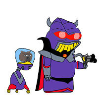

아직은 애기애기한 누리호
댓글
??? : 우주에서 누가 왔게???

한국화약이 왔쪄요
???: 히얼스 조니!!
스타쉽은 흑인ㄱㅊ 같네
개붕형은 그걸 어찌아시오

1970,80년대 미.소 수준까진 따라온거라보면됨?
그리고 미소가 발전하는데 30년걸릴걸 10년이면 따라잡을 수 있는 기반도 있고
미국은 1969년에 달에 착륙했습니다..
않이오.... 아직도 격차 큼
다음 목표는 100미터 짜리겠네
120미터면 30층 아파트 높이인데 스타쉽 준내 크네... 저걸 회수까지 한다고?
이륙하는데 진짜 뭔 게임에서만보던 충격파가 생기더라
건물이 하늘에서 내려오는데 그걸 잡아주는 집게도 존재함 ㅋㅋㅌㅌ진짜 나같은 문과는 원시인과 다를게없는 거같아
새턴5가 1970년쯤인가
미니트맨, 피스키퍼 같은거랑 비교해주세요
헤이헤이
스타십이 일론이 하는건가?
생긴건 새턴이 제일간지남
러시아 기술 원천이라 소유즈랑 비슷한건가
모든 원천은 V1 독일이야..
나로호면 몰라도 누리호는 아님
이거보니 한세기전 열강들이 거함거포주의에 눈뒤집힌게 이해될것같기도하고..
동일함. 당시엔 엔진소형화가 이뤄지지않아서 엔진이큼 - 추력이큼 - 더빠름 - 더멀리감
의 시대였고 엔진 소형화가 이뤄지면서 거함거포주의가 사라진거랑 동일한 원리로..
엔진의 소형화는 거함거포의 약점때문에 발생한거 아닌가
항모 항공전력에 전함이 녹아내리는데
그냥 스타십이 체급 또라이급임
5 발사
4 발사
3 발사
2 발사
1 발사
결코 전쟁! 다시 전쟁!
새턴5가 엄청 컸구나. 저게 급하게 달착륙 경쟁 하느라 줄인거라니
새턴V 진짜 ㄷㄷ
어차피 누리호는 미사일로못씀
미르호 라고 다른거 있어
그렇게 말씀하시면 안 되고
과학적인 목적의 개발!!
로켓들 화물공간 생각해보면 스타쉽이 진짜 미쳐버린 로켓이란게 확 느껴지네


스타쉽이 ㅁㅊ거긴하구나ㄷ

사실 길이가 아니라 탑재중량을 비교해야지. 그럼 더 애기가 됨
열심히 개발해서 더 큰것도... 어흐
지구를 향하는 프로젝트 시작